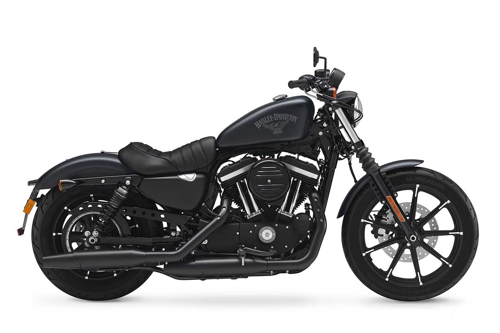
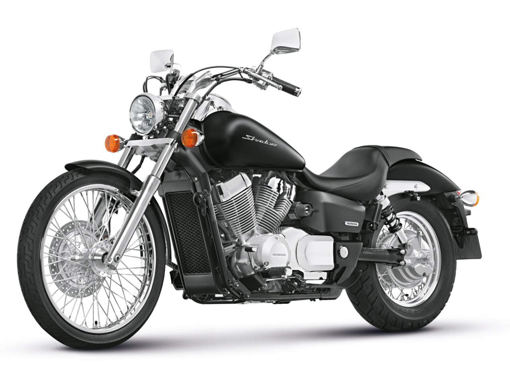

-
Harley-Davison-Sporster

Projetada para emocionar, a Sportster™ S é construída em torno do potente motor Revolution™ Max 1250T, que produz 121 cv de potência e 12 kgf.m de torque.
Com eletrônica de assistência ao piloto, manuseio otimizado e um chassi leve, essa Sportster de última geração é focada em desempenho.
R$ 129.700
-
Honda-Shadow-750

Equipada com um motor V-Twin de 745 cc refrigerado a liquido, a Honda Shadow 750 foi criada motociclistas que querem vivenciar longas viagens, mas sem comprometer o prazer de condução em trajetos urbanos.
O sistema de transmissão de 5 velocidades combinado a um eixo cardã, reduz a necessidade de manutenções frequentes.
R$ 42.800
-
Kawasaki-Vulcn-900

A Kawasaki Vulcan 900 - nas suas versões Classic e Custom e Classic LT - chama a atenção pelo seu design moderno. Seja para longas viagens, para uso urbano ou simplesmente estacionada, a Vulcan 900 certamente será motivo de orgulho para o seu proprietário. O motor de dois cilindros dispostos em V foi configurado para garantir um excelente torque a baixas rotações. O módulo ECU controla os sub-aceleradores que estão localizados atrás da válvula do acelerador principal,
permitindo que o sistema de injeção eletrônica digital ofereça respostas mais precisas, de forma semelhante a um carburador de velocidade constante.
R$ 42.900,00